Note: This vignette is illustrated with fake data. The dataset explored in this example should not be used to inform decision-making.
ready4use includes a number of tools for visualising health economic model data and forms part of the ready4 framework. Details of how to find compatible datasets are provided in another article. The ready4use visualisation tools illustrated in this vignette provide an interface to functions from the ggpubr library. To work as intended, some (but not most) of these tools also require the ggpubr library to be loaded.
## Loading required package: ggplot2Ingest and pre-process data
We begin by ingesting the data from online repository we require into
a Ready4useDyad, as illustrated
in another vignette.
objects_ls <- Ready4useRepos(dv_nm_1L_chr = "fakes",
dv_ds_nm_1L_chr = "https://doi.org/10.7910/DVN/HJXYKQ",
dv_server_1L_chr = "dataverse.harvard.edu") %>%
ingest(fls_to_ingest_chr = c("ymh_clinical_tb","ymh_clinical_dict_r3"),
metadata_1L_lgl = F)
X <- Ready4useDyad(ds_tb = objects_ls$ymh_clinical_tb,
dictionary_r3 = objects_ls$ymh_clinical_dict_r3) %>%
renew(type_1L_chr = "case")This dataset is a synthetic (“fake”) microdata representation of clinic patients with data for each patient reported for up to two data collection rounds (baseline and follow-up). We also need to transform this dataset into other formats to use with some of the plot types we illustrate in this vignette. We first make a dataset with baseline values only.
X1 <- renewSlot(X, "ds_tb",
procureSlot(X, "ds_tb") %>% dplyr::filter(round=="Baseline"))Next, we create summary datasets with mean variable values for the entire sample at baseline.
X2 <- renewSlot(X1, "ds_tb",
procureSlot(X, "ds_tb") %>% dplyr::group_by(d_studying_working) %>%
dplyr::summarise(dplyr::across(dplyr::where(is.numeric),
function(x){ mean(x, na.rm = TRUE)})))
X3 <- renewSlot(X1, "ds_tb",
procureSlot(X, "ds_tb") %>% dplyr::group_by(d_studying_working, d_sex_birth_s) %>%
dplyr::summarise(dplyr::across(dplyr::where(is.numeric),
function(x){ mean(x, na.rm = TRUE)}), .groups = 'drop'))
X4 <- renewSlot(X1, "ds_tb",
procureSlot(X, "ds_tb") %>% dplyr::group_by(d_sex_birth_s, d_country_bir_s,
d_studying_working, c_p_diag_s,c_clinical_staging_s) %>%
dplyr::summarise(dplyr::across(dplyr::where(is.numeric),
function(x){ mean(x, na.rm = TRUE)}), .groups = 'drop'))We also create datasets with summaries of mean variable values at both timepoints.
X5 <- renewSlot(X, "ds_tb",
procureSlot(X, "ds_tb") %>% dplyr::group_by(round) %>%
dplyr::summarise(dplyr::across(dplyr::where(is.numeric), function(x){ mean(x, na.rm = TRUE)})))
X6 <- renewSlot(X, "ds_tb",
procureSlot(X, "ds_tb") %>% dplyr::group_by(round, d_sex_birth_s) %>%
dplyr::summarise(dplyr::across(dplyr::where(is.numeric), function(x){ mean(x, na.rm = TRUE)})))## `summarise()` has grouped output by 'round'. You can override using the
## `.groups` argument.We make a dataset that is restricted to 50 randomly selected cases for which data is available at two timepoints.
X7 <- renewSlot(X, "ds_tb",
procureSlot(X, "ds_tb") %>%
dplyr::filter(fkClientID %in% (intersect(procureSlot(X, "ds_tb") %>% dplyr::filter(round=="Follow-up") %>%
dplyr::pull(fkClientID), X1@ds_tb$fkClientID) %>% sample(50))))We next make dataset summaries of the counts at baseline of sample sub-groups.
X8 <- renewSlot(X1, "ds_tb",
procureSlot(X1, "ds_tb") %>% dplyr::filter(!is.na(d_studying_working)) %>%
dplyr::group_by(d_studying_working) %>% dplyr::summarise(Count = dplyr::n()))
X9 <- renewSlot(X1, "ds_tb",
table(procureSlot(X1, "ds_tb") %>% dplyr::select(d_studying_working, d_sex_birth_s)) %>% tibble::as_tibble())
X10 <- renewSlot(X1, "ds_tb",
table(procureSlot(X1, "ds_tb") %>%
dplyr::select(d_studying_working, d_sex_birth_s, c_p_diag_s, c_clinical_staging_s)) %>% tibble::as_tibble())Some of the visualisations that we will be generating in this vignette will require labels that are derived from variable values to be modified (e.g. for brevity). We therefore next make look-up tables for recoding these values.
x <- renew(ready4show::ready4show_correspondences(),
old_nms_chr = c("Not studying or working", "Studying only", "Studying and working", "Working only", "Female", "Male"),
new_nms_chr = c("NEITHER", "EDUCATION", "BOTH", "EMPLOYMENT", "FEMALE", "MALE"))
y <- renew(ready4show::ready4show_correspondences(),
old_nms_chr = c("Not studying or working", "Studying only", "Studying and working", "Working only",
"Depression and Anxiety"),
new_nms_chr = c("Neither", "Education", "Both", "Employment", "Both"))Options for using the Depict method illustrated with the default plot type (barplot)
Data contained in a Ready4useDyad can be visualised using the
Depict method.
Single plots
Plot results for one variable
Basic plot
depict(X1, x_vars_chr = "d_studying_working")Drop missing values
depict(X1, x_vars_chr = "d_studying_working", drop_missing_1L_lgl = T)Drop tick marks and tick lables
depict(X1, x_vars_chr = "d_studying_working", drop_missing_1L_lgl = T, drop_ticks_1L_lgl = T)Use variable description instead of variable name (via lookup to data dictionary) for X axis and legend labels and remove label from Y axis
depict(X1, x_vars_chr = "d_studying_working", x_labels_chr = NA_character_, y_labels_chr = "",
z_labels_chr = NA_character_, drop_missing_1L_lgl = T, drop_ticks_1L_lgl = T)Specify custom X axis and legend labels
depict(X1, x_vars_chr = "d_studying_working", x_labels_chr = "EDUCATION AND EMPLOYMENT", y_labels_chr = "",
z_labels_chr = "", drop_missing_1L_lgl = T, drop_ticks_1L_lgl = T)Change Y axis from counts to percentage
depict(X1, x_vars_chr = "d_studying_working", x_labels_chr = "EDUCATION AND EMPLOYMENT", y_labels_chr = "",
z_labels_chr = "", as_percent_1L_lgl = T, drop_missing_1L_lgl = T, drop_ticks_1L_lgl = T)Recode the legend value labels
depict(X1, x_vars_chr = "d_studying_working", x_labels_chr = "EDUCATION AND EMPLOYMENT", y_labels_chr = "",
z_labels_chr = "", as_percent_1L_lgl = T, drop_missing_1L_lgl = T, drop_ticks_1L_lgl = T,
recode_lup_r3 = x)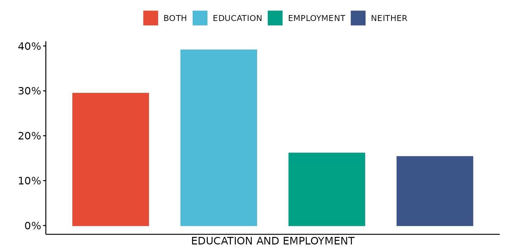
Stratify results by a second (categorical) variable - in this case, sex
depict(X1, x_vars_chr = "d_studying_working", x_labels_chr = "EDUCATION AND EMPLOYMENT", y_labels_chr = "",
z_vars_chr = "d_sex_birth_s", z_labels_chr = "SEX", as_percent_1L_lgl = T, drop_missing_1L_lgl = T,
recode_lup_r3 = x)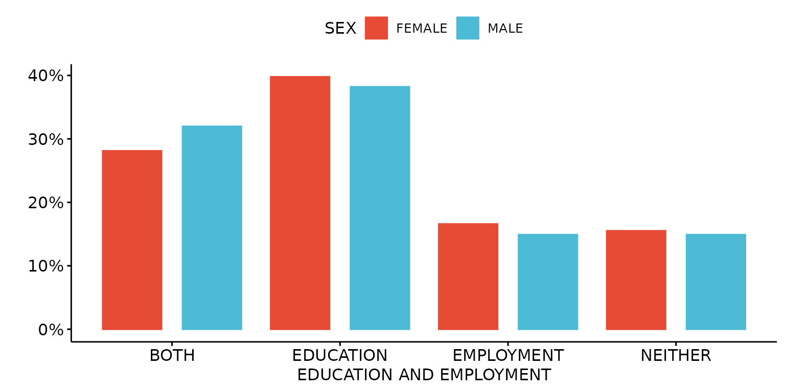
Stack bars
depict(X1, x_vars_chr = "d_studying_working", x_labels_chr = "EDUCATION AND EMPLOYMENT", y_labels_chr = "",
z_vars_chr = "d_sex_birth_s", z_labels_chr = "", as_percent_1L_lgl = T, drop_missing_1L_lgl = T,
position_xx = ggplot2::position_stack(), recode_lup_r3 = y)Plot results for two variables - one categorical (x axis) and the other numeric (y axis)
Generate title using variable labels
depict(X2, x_vars_chr = "d_studying_working", x_labels_chr = NA_character_, y_vars_chr = "k6_total",
y_labels_chr = NA_character_, z_labels_chr = "", drop_missing_1L_lgl = T,
drop_ticks_1L_lgl = T, recode_lup_r3 = x, titles_chr = NA_character_)Stratify results by a third (categorical) variable - in this case, sex
depict(X3, x_vars_chr = "d_studying_working", x_labels_chr = "EDUCATION AND EMPLOYMENT", y_vars_chr = "k6_total",
y_labels_chr = "K6", z_vars_chr = "d_sex_birth_s", z_labels_chr = "SEX", drop_missing_1L_lgl = T,
titles_chr = "PSYCHOLOGICAL DISTRESS BY EDUCATION, EMPLOYMENT AND SEX")Modify palettes
The palette options from the “ggsci” package that are compatible with the ready4use Depict method can be retrieved using the following function call.
get_styles("ggsci")## [1] "npg" "aaas" "lancet" "jco" "nejm"
## [6] "ucscgb" "uchicago" "d3" "futurama" "igv"
## [11] "locuszoom" "rickandmorty" "startrek" "simpsons" "tron"Use Lancet journal palette
depict(X1, x_vars_chr = "d_studying_working", x_labels_chr = "EDUCATION AND EMPLOYMENT", y_labels_chr = "",
z_labels_chr = "", as_percent_1L_lgl = T, drop_missing_1L_lgl = T, drop_ticks_1L_lgl = T, style_1L_chr = "lancet")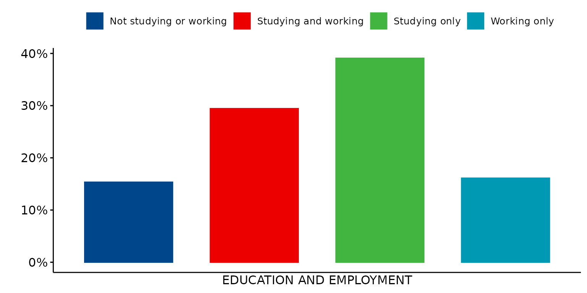
The palette options from “the viridis” package that are compatible with the ready4use Depict method can be retrieved using the following function call.
get_styles("viridis")## [1] "magma" "A" "inferno" "B" "plasma" "C" "viridis"
## [8] "D" "cividis" "E" "rocket" "F" "mako" "G"
## [15] "turbo" "H"Use the Viridis Rocket palette
depict(X1, x_vars_chr = "d_studying_working", x_labels_chr = "EDUCATION AND EMPLOYMENT", y_labels_chr = "",
z_labels_chr = "", as_percent_1L_lgl = T, drop_missing_1L_lgl = T, drop_ticks_1L_lgl = T,
style_1L_chr = "rocket", type_1L_chr = "viridis")Single colour plots
Use just the first colour from the selected (in this case, default) palette
depict(X1, x_vars_chr = "d_studying_working", x_labels_chr = "", y_labels_chr = "", as_percent_1L_lgl = T,
drop_missing_1L_lgl = T, fill_single_1L_lgl = T, recode_lup_r3 = x,
titles_chr = "EDUCATION AND EMPLOYMENT STATUS")Single colour plot using AAAS journal palette
depict(X1, x_vars_chr = "d_studying_working", x_labels_chr = "", y_labels_chr = "", as_percent_1L_lgl = T,
drop_missing_1L_lgl = T, fill_single_1L_lgl = T, recode_lup_r3 = x, style_1L_chr = "aaas",
titles_chr = "EDUCATION AND EMPLOYMENT STATUS")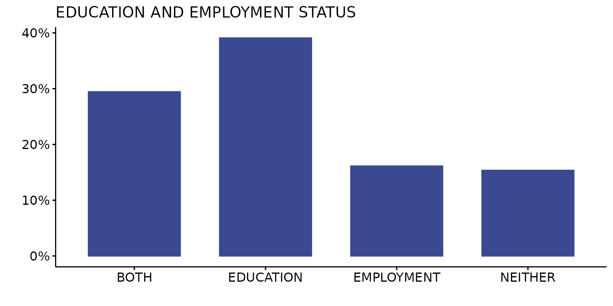
Single colour plot using custom colour (black)
depict(X1, x_vars_chr = "d_studying_working", x_labels_chr = "", y_labels_chr = "", as_percent_1L_lgl = T,
colours_chr = "black", drop_missing_1L_lgl = T, fill_single_1L_lgl = T, recode_lup_r3 = x,
titles_chr = "EDUCATION AND EMPLOYMENT STATUS", type_1L_chr = "manual")Supply additional ggpubr arguments
Add label to bars
depict(X1, x_vars_chr = "d_studying_working", x_labels_chr = "", y_labels_chr = "", as_percent_1L_lgl = T,
drop_missing_1L_lgl = T, fill_single_1L_lgl = T, recode_lup_r3 = x,
titles_chr = "EDUCATION AND EMPLOYMENT STATUS", label = T, lab.pos = "in", lab.col = "white")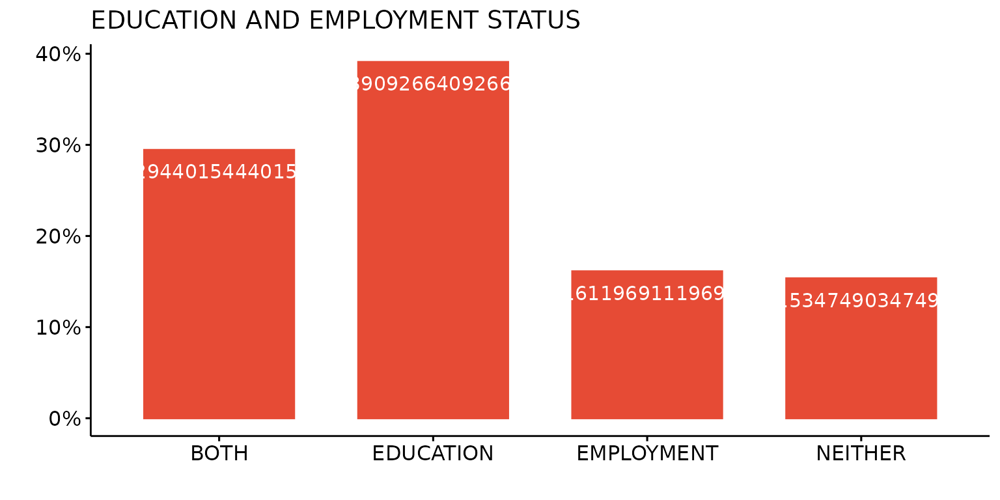
Change orientation of bars
depict(X1, x_vars_chr = "d_studying_working", x_labels_chr = "", y_labels_chr = "", as_percent_1L_lgl = T,
drop_missing_1L_lgl = T, fill_single_1L_lgl = T, recode_lup_r3 = x,
titles_chr = "EDUCATION AND EMPLOYMENT STATUS", orientation = "horiz")Create multiple plots
Create a list of plots
plot_ls <- depict(X1, x_vars_chr = c("d_sex_birth_s","d_studying_working", "d_country_bir_s"),
x_labels_chr = NA_character_, y_labels_chr = "" , z_labels_chr = "",
as_percent_1L_lgl = T, drop_missing_1L_lgl = T, drop_ticks_1L_lgl = T)
plot_ls$d_sex_birth_s
plot_ls$d_studying_working
plot_ls$d_country_bir_sCreate a composite plot, with a common legend
depict(X4, x_vars_chr = c("d_country_bir_s", "d_studying_working", "c_p_diag_s", "c_clinical_staging_s"),
x_labels_chr = NA_character_, y_vars_chr = "k6_total", y_labels_chr = "K6",
z_vars_chr = "d_sex_birth_s", z_labels_chr = "SEX", arrange_1L_lgl = T,
arrange_args_ls = list(ncol = 2, nrow = 2, common.legend = T),
drop_missing_1L_lgl = T, recode_lup_r3 = y)Other plot types
Plot one continuous variable
Density plot
Basic density plot
depict(X1, x_vars_chr = "k6_total", what_1L_chr = "density")## Warning: Removed 1 row containing non-finite outside the scale range
## (`stat_density()`).Stratify results by a second (categorical) variable, report percentages rather than probability and look-up labels from dictionary
depict(X1, x_vars_chr = "k6_total", x_labels_chr = NA_character_, y_labels_chr = "Percentatge",
z_vars_chr = "d_studying_working", z_labels_chr = "", as_percent_1L_lgl = T,
drop_missing_1L_lgl = T, what_1L_chr = "density") 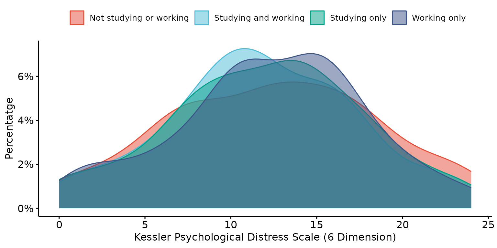
Empirical cumulative density function (ECDF)
Basic ECDF plot
depict(X1, x_vars_chr = "k6_total", what_1L_chr = "ecdf")## Warning: Removed 1 row containing non-finite outside the scale range
## (`stat_ecdf()`).Stratify results by a second (categorical) variable and customise labels
depict(X1,x_vars_chr = "k6_total", x_labels_chr = NA_character_, y_labels_chr = "",
z_vars_chr = "d_studying_working", z_labels_chr = "", drop_missing_1L_lgl = T,
what_1L_chr = "ecdf")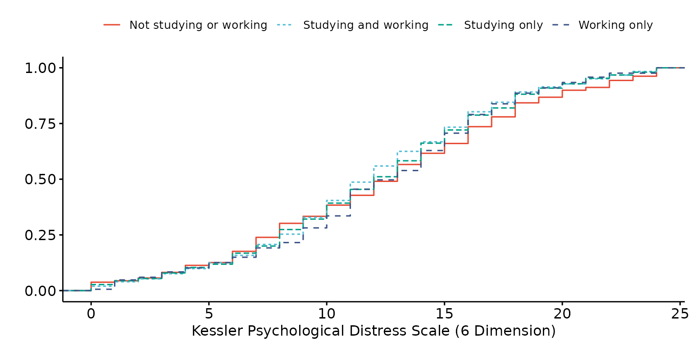
Histogram
Basic histogram
depict(X1, x_vars_chr = "k6_total", what_1L_chr = "histogram")## Warning: Removed 1 row containing non-finite outside the scale range
## (`stat_bin()`).Specify the number of bins, report percentages rather than counts and customise labels
depict(X1, x_vars_chr = "k6_total", x_labels_chr = "K6", y_labels_chr = "", as_percent_1L_lgl = T,
what_1L_chr = "histogram", bins = 10)## Warning: Removed 1 row containing non-finite outside the scale range
## (`stat_bin()`).Stratify results by a second (categorical) variable and look-up labels from dictionary
depict(X1, x_vars_chr = "k6_total", x_labels_chr = NA_character_, z_vars_chr = "d_sex_birth_s",
z_labels_chr = NA_character_, as_percent_1L_lgl = T, drop_missing_1L_lgl = T, position_xx = "dodge",
what_1L_chr = "histogram", bins=10)Add custom ggpubr arguments to add density plot and mean lines
depict(X1, x_vars_chr = "k6_total", x_labels_chr = "K6", y_labels_chr = "",
z_vars_chr = "d_sex_birth_s", z_labels_chr = "Sex", as_percent_1L_lgl = F,
drop_missing_1L_lgl = T, what_1L_chr = "histogram", add = "mean", add_density = TRUE)QQ Plot
Basic QQ plot
depict(X1, x_vars_chr = "k6_total", what_1L_chr = "qqplot")## Warning: Removed 1 row containing non-finite outside the scale range
## (`stat_qq()`).## Warning: Removed 1 row containing non-finite outside the scale range (`stat_qq_line()`).
## Removed 1 row containing non-finite outside the scale range (`stat_qq_line()`).Stratify results by a second (categorical) variable and customise labels
depict(X1, x_vars_chr = "k6_total", y_labels_chr = "K6", drop_missing_1L_lgl = T,
z_vars_chr = "d_studying_working", z_labels_chr = "", what_1L_chr = "qqplot")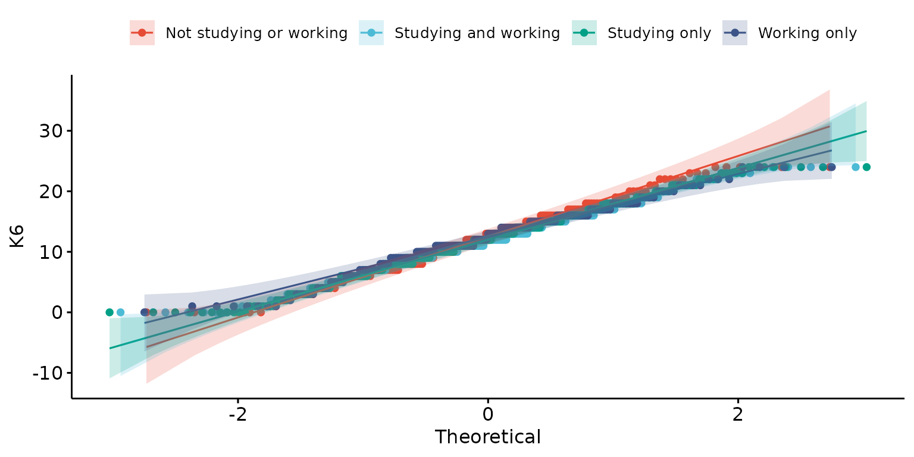
Plot two variables (one continuous, one discrete)
Box plot
Basic box plot
depict(X, x_vars_chr = "round", y_vars_chr = "k6_total", what_1L_chr = "boxplot")## Warning: Removed 3 rows containing non-finite outside the scale range
## (`stat_boxplot()`).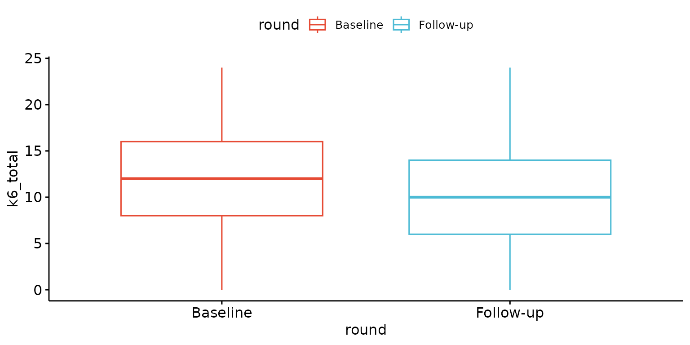
Customise labels and remove x-axis tick-marks
depict(X, x_vars_chr = "round", x_labels_chr = NA_character_, y_vars_chr = "k6_total",
y_labels_chr = "K6", z_labels_chr = "", drop_missing_1L_lgl = T, drop_ticks_1L_lgl = T,
what_1L_chr = "boxplot")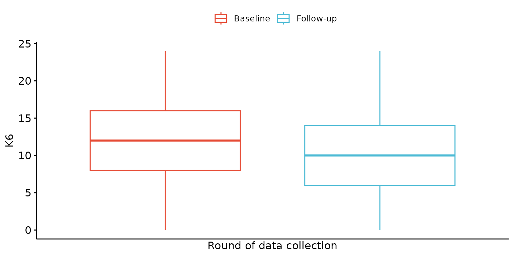
Fill boxes
depict(X, x_vars_chr = "round", x_labels_chr = NA_character_, y_vars_chr = "k6_total",
y_labels_chr = NA_character_, z_labels_chr = "", drop_missing_1L_lgl = T, drop_ticks_1L_lgl = T,
what_1L_chr = "boxplot", fill = "round", fill_single_1L_lgl = F)Stratify results by a third (categorical) variable
depict(X, x_vars_chr = "round", x_labels_chr = NA_character_, y_vars_chr = "k6_total",
y_labels_chr = NA_character_, drop_missing_1L_lgl = T, z_vars_chr = "d_sex_birth_s",
z_labels_chr = NA_character_, what_1L_chr = "boxplot", fill = "d_sex_birth_s", fill_single_1L_lgl = F)Add jitter points
depict(X, x_vars_chr = "round", x_labels_chr = "", y_vars_chr = "k6_total", y_labels_chr = "K6",
drop_missing_1L_lgl = T, z_vars_chr = "d_sex_birth_s", z_labels_chr = NA_character_,
what_1L_chr = "boxplot", add = "jitter")Donut chart
Basic donut chart
depict(X1, x_vars_chr = "d_studying_working", what_1L_chr = "donutchart")Change colour of separating line, drop missing values and remove label
depict(X1, x_vars_chr = "d_studying_working", x_labels_chr = "", drop_missing_1L_lgl = T,
line_1L_chr = "white", what_1L_chr = "donutchart")Report percentage rather than counts and change location and colouring of segment labels
depict(X1, x_vars_chr = "d_studying_working", x_labels_chr = "", as_percent_1L_lgl = T, drop_missing_1L_lgl = T,
line_1L_chr = "white", what_1L_chr = "donutchart", lab.pos = "in", lab.font = "white")The same result can be achieved by supplying a dataset with frequency counts. Note, drop_missing_1L_lgl is ignored if using this method.
depict(X8, x_vars_chr = "Count", z_vars_chr = "d_studying_working", z_labels_chr = "", as_percent_1L_lgl = T,
line_1L_chr = "white", what_1L_chr = "donutchart", lab.pos = "in", lab.font = "white")
Remove legend and change segment labels to names rather than values.
depict(X1, x_vars_chr = "d_studying_working", x_labels_chr = NA_character_, drop_legend_1L_lgl = T, drop_missing_1L_lgl = T,
line_1L_chr = "white", what_1L_chr = "donutchart", label = "d_studying_working")Dot chart
Basic dot chart
depict(X2, x_vars_chr = "d_studying_working", y_vars_chr = "k6_total", what_1L_chr = "dotchart")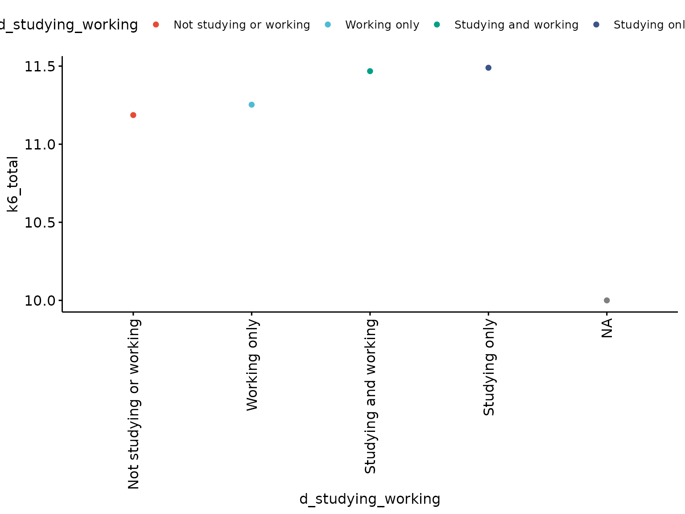
Use a single colour for dots, rotate chart, increase dot-size, customise label orders, recode label values and add and customise segment lines
depict(X2, x_vars_chr = "d_studying_working", x_labels_chr = "EDUCATION AND EMPLOYMENT",
y_vars_chr = "k6_total", y_labels_chr = "K6", drop_missing_1L_lgl = T, fill_single_1L_lgl = T,
recode_lup_r3 = y, what_1L_chr = "dotchart", add = "segment",
add.params = list(color = "lightgray", size = 1.5), rotate = T, size = 3)Stratify by third (categorical) variable.
depict(X3, x_vars_chr = "d_studying_working", x_labels_chr = "EDUCATION AND EMPLOYMENT",
y_vars_chr = "k6_total", y_labels_chr = "K6", z_vars_chr = "d_sex_birth_s", z_labels_chr = "SEX",
drop_missing_1L_lgl = T, position_xx = ggplot2::position_dodge(0.3), recode_lup_r3 = x,
what_1L_chr = "dotchart", add = "segment", add.params = list(color = "lightgray", size = 1.5),
rotate = T, size = 3)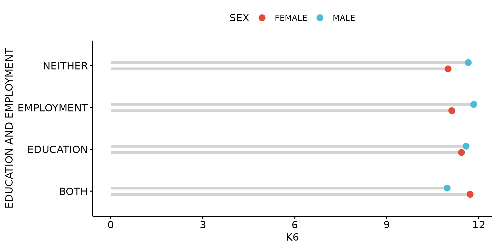
Dot plot
Basic dot plot
depict(X1, x_vars_chr = "d_studying_working", y_vars_chr = "k6_total", what_1L_chr = "dotplot")## Bin width defaults to 1/30 of the range of the data. Pick better value with
## `binwidth`.## Warning: Removed 33 rows containing missing values or values outside the scale range
## (`stat_bindot()`).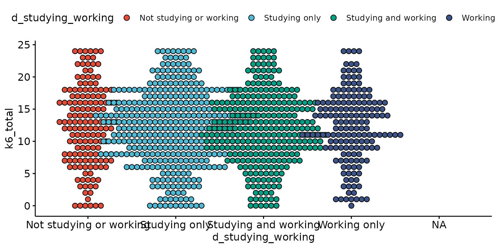
Customise and reorder labels, remove missing values and change dot size
depict(X1, x_vars_chr = "d_studying_working", x_labels_chr = "EDUCATION AND EMPLOYMENT" ,
y_vars_chr = "k6_total", y_labels_chr = "K6", drop_legend_1L_lgl = T, drop_missing_1L_lgl = T,
recode_lup_r3 = x, what_1L_chr = "dotplot",
order = c("EDUCATION", "EMPLOYMENT","BOTH", "NEITHER"), size = 0.3)## Bin width defaults to 1/30 of the range of the data. Pick better value with
## `binwidth`.Stratify by a third (categorical) variable
depict(X1, x_vars_chr = "d_studying_working", x_labels_chr = "EDUCATION AND EMPLOYMENT" ,y_vars_chr = "k6_total", y_labels_chr = "K6",
z_vars_chr = "d_sex_birth_s", z_labels_chr = "SEX", drop_missing_1L_lgl = T, what_1L_chr = "dotplot", size = 0.35)## Bin width defaults to 1/30 of the range of the data. Pick better value with
## `binwidth`.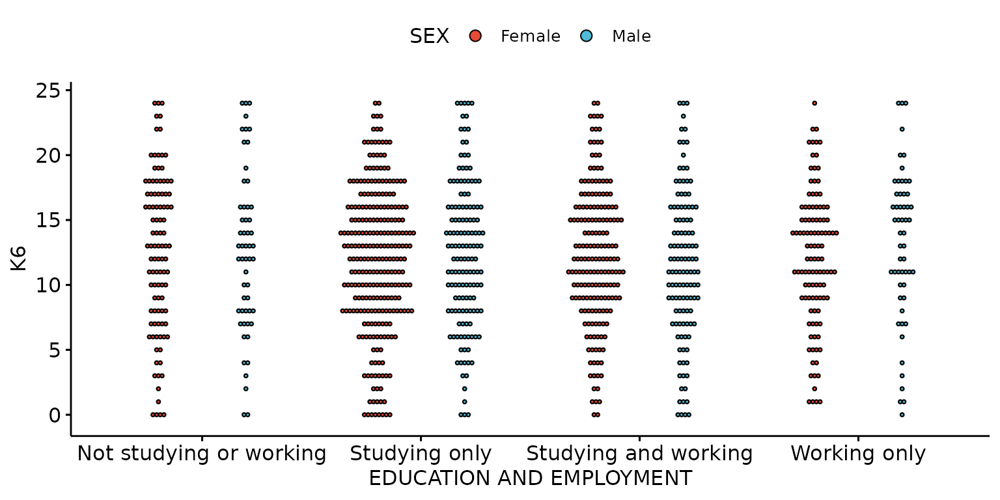
Error plot
Basic error plot
depict(X1, x_vars_chr = "d_studying_working", y_vars_chr = "k6_total", what_1L_chr = "errorplot")## Warning: Removed 1 row containing non-finite outside the scale range
## (`stat_summary()`).Customise labels and the positioning and colouring of error lines
depict(X1, x_vars_chr = "d_studying_working", x_labels_chr = NA_character_, y_vars_chr = "k6_total",
y_labels_chr = "K6", z_vars_chr = "d_sex_birth_s", z_labels_chr = NA_character_,
drop_missing_1L_lgl = T, what_1L_chr = "errorplot",
palette = "Paired", error.plot = "pointrange", position = ggplot2::position_dodge(0.5))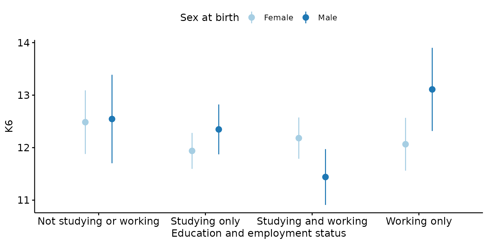
Line plot
Basic line plot
depict(X5, x_vars_chr = "round", y_vars_chr = "k6_total", what_1L_chr = "line")Plot mean values with error bars, stratify results by third (categorical) variable and look-up labels from dictionary
depict(X, x_vars_chr = "round", x_labels_chr = NA_character_, y_vars_chr = "k6_total",
y_labels_chr = "K6", z_vars_chr = "d_sex_birth_s", z_labels_chr = NA_character_,
drop_missing_1L_lgl = T, position_xx = ggplot2::position_dodge(0.5),
what_1L_chr = "line", add = "mean_se")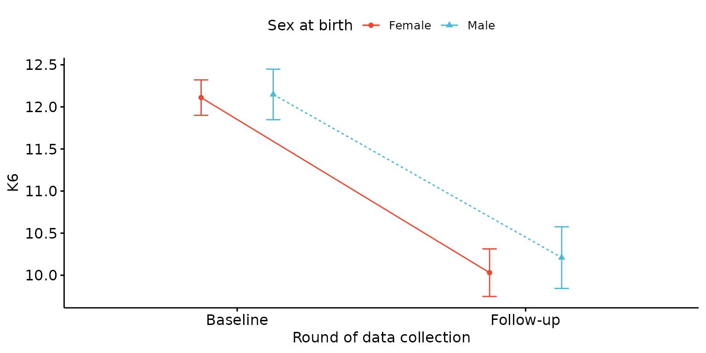
Paired plot
Basic paired plot
depict(X7, x_vars_chr = "round", y_vars_chr = "k6_total", what_1L_chr = "paired")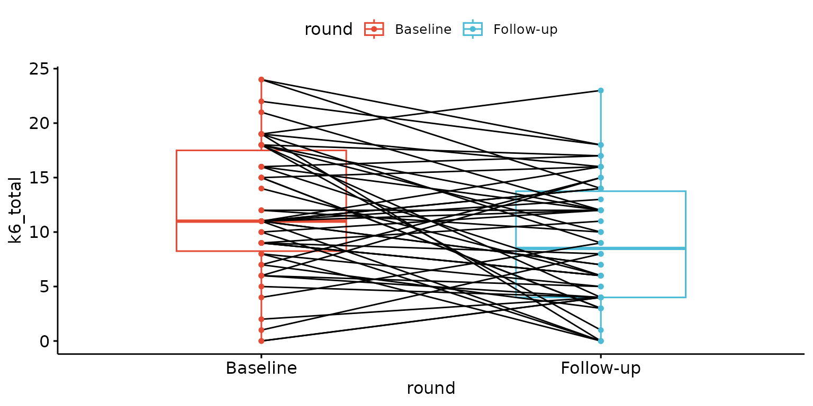
Customise labels, remove x-axis ticks and labels and change line colour
depict(X7, x_vars_chr = "round", x_labels_chr = "", y_vars_chr = "k6_total",
y_labels_chr = "K6", z_labels_chr = NA_character_,
drop_ticks_1L_lgl = T, line_1L_chr = "lightgray", what_1L_chr = "paired")Pie chart
Basic pie chart
depict(X1, x_vars_chr = "d_studying_working", what_1L_chr = "pie")Report percentage rather than counts, change location and colouring of segment labels and remove labels
depict(X1, x_vars_chr = "d_studying_working", x_labels_chr = "", as_percent_1L_lgl = T, drop_missing_1L_lgl = T,
line_1L_chr = "white", what_1L_chr = "pie", lab.pos = "in", lab.font = "white")The same result can be achieved by supplying a dataset with frequency counts. Note, the drop_missing_1L_lgl is ignored if using this method.
depict(X8, x_vars_chr = "Count", z_vars_chr = "d_studying_working", z_labels_chr = "",
as_percent_1L_lgl = T, drop_missing_1L_lgl = T, line_1L_chr = "white", what_1L_chr = "pie",
lab.pos = "in", lab.font = "white")## Ignoring drop_missing_1L_lgl argument value - this is only used when not directly supplying a frequency table
Strip chart
Basic strip chart
depict(X1, x_vars_chr = "d_studying_working", y_vars_chr = "k6_total", what_1L_chr = "strip")## Warning: Removed 1 row containing missing values or values outside the scale range
## (`geom_point()`).Look-up labels, drop legend and add mean and standard deviation lines
depict(X1, x_vars_chr = "d_studying_working", x_labels_chr = NA_character_, y_vars_chr = "k6_total",
y_labels_chr = "K6", drop_legend_1L_lgl = T, drop_missing_1L_lgl = T, what_1L_chr = "strip", add = "mean_sd")Violin plot
Basic violin plot
depict(X1, x_vars_chr = "d_studying_working", y_vars_chr = "k6_total", what_1L_chr = "violin")## Warning: Removed 1 row containing non-finite outside the scale range
## (`stat_ydensity()`).Customise labels, drop legend and add mean and jitter dots
depict(X1, x_vars_chr = "d_studying_working", x_labels_chr = NA_character_, y_vars_chr = "k6_total",
y_labels_chr = "", drop_legend_1L_lgl = T, drop_missing_1L_lgl = T,
what_1L_chr = "violin", add = "jitter")For plotting two variables (both continuous)
Scatter plot
Basic scatter plot
depict(X1, x_vars_chr = "phq9_total", y_vars_chr = "k6_total", what_1L_chr = "scatter")## Warning: Removed 5 rows containing missing values or values outside the scale range
## (`geom_point()`).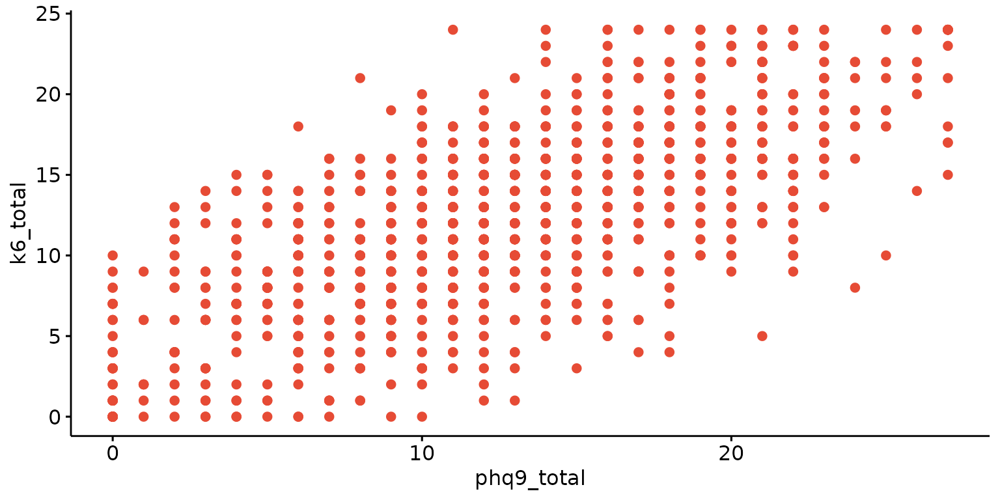
Add regression line, change dot sizes and and customise labels.
depict(X1, x_vars_chr = "phq9_total", x_labels_chr = NA_character_, y_vars_chr = "k6_total",
y_labels_chr = "K6", drop_missing_1L_lgl = T, what_1L_chr = "scatter",
add = "reg.line", size = 0.5, conf.int = TRUE, cor.coef = TRUE,
cor.coeff.args = list(method = "pearson", label.x = 3, label.sep = "\n"))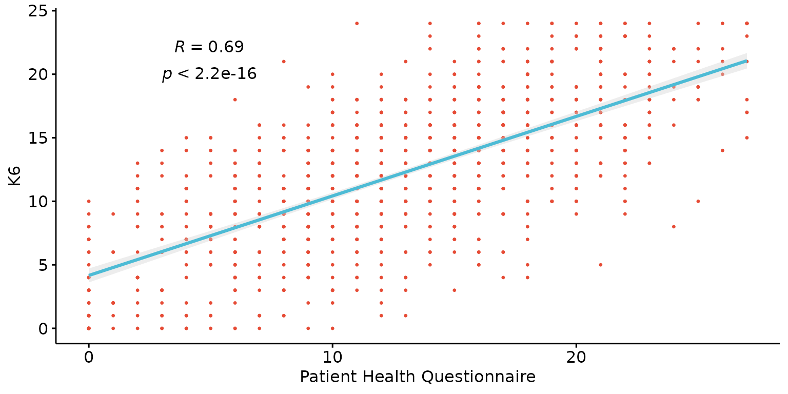
Scatter plot with histograms
Basic scatter plot with histograms
depict(X1, x_vars_chr = "phq9_total", y_vars_chr = "k6_total", what_1L_chr = "scatterhist")## Warning: Removed 5 rows containing missing values or values outside the scale range
## (`geom_point()`).
## Removed 5 rows containing missing values or values outside the scale range
## (`geom_point()`).## Warning: Removed 4 rows containing non-finite outside the scale range
## (`stat_density()`).## Warning: Removed 5 rows containing missing values or values outside the scale range
## (`geom_point()`).## Warning: Removed 1 row containing non-finite outside the scale range
## (`stat_density()`).## Warning: Removed 5 rows containing missing values or values outside the scale range
## (`geom_point()`).## Warning: Removed 4 rows containing non-finite outside the scale range
## (`stat_density()`).## Warning: Removed 5 rows containing missing values or values outside the scale range
## (`geom_point()`).## Warning: Removed 1 row containing non-finite outside the scale range
## (`stat_density()`).
Customise labels (except for z_labels_chr which currently does not work with this type of plot) and stratify by third categorical variable
depict(X, x_vars_chr = "phq9_total", x_labels_chr = NA_character_, y_vars_chr = "k6_total",
y_labels_chr = "K6", z_vars_chr = "round", drop_missing_1L_lgl = T, what_1L_chr = "scatterhist")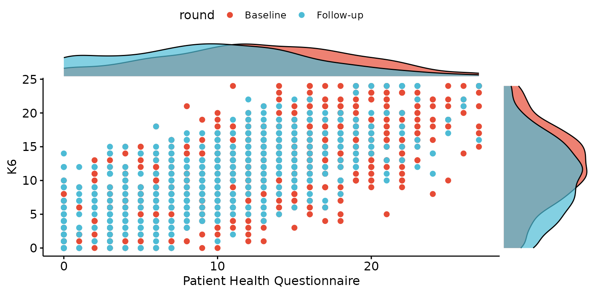
Contingency table
Balloon plot
Basic balloon plot
depict(X9, x_vars_chr = "d_studying_working", y_vars_chr = "d_sex_birth_s", z_vars_chr = "n",
what_1L_chr = "balloonplot")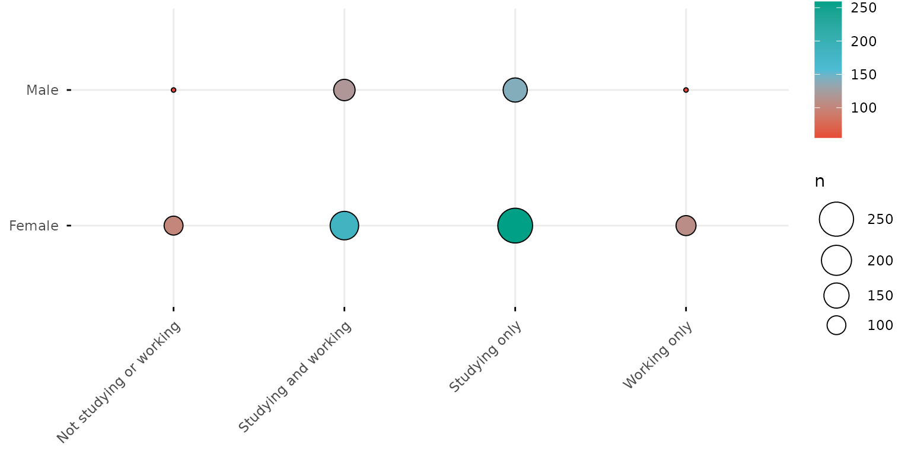
Single colour balloon plot
depict(X9, x_vars_chr = "d_studying_working", y_vars_chr = "d_sex_birth_s", z_vars_chr = "n", what_1L_chr = "balloonplot", fill_single_1L_lgl = T)
Fized size, labelled balloons
depict(X9, x_vars_chr = "d_studying_working", y_vars_chr = "d_sex_birth_s", z_vars_chr = "n",
what_1L_chr = "balloonplot", size = 10, show.label=T)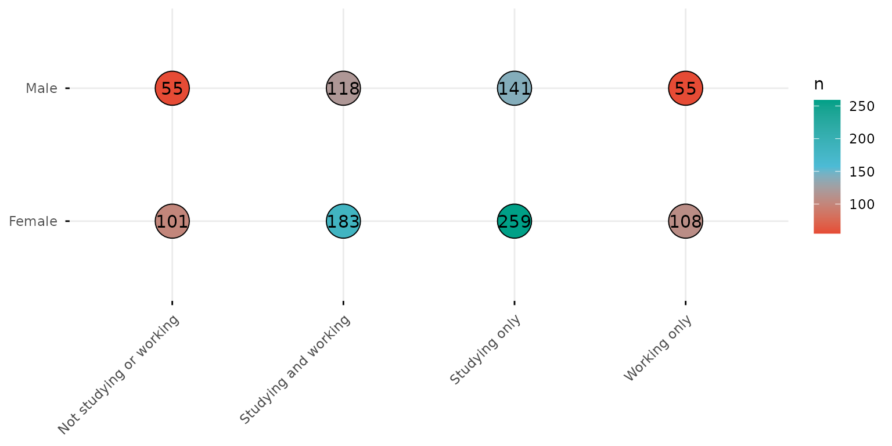
Change pallete (from which 3 colours will be selected)
depict(X9, x_vars_chr = "d_studying_working", y_vars_chr = "d_sex_birth_s", z_vars_chr = "n",
style_1L_chr = "C", type_1L_chr = "viridis", what_1L_chr = "balloonplot", size = 10, show.label=T)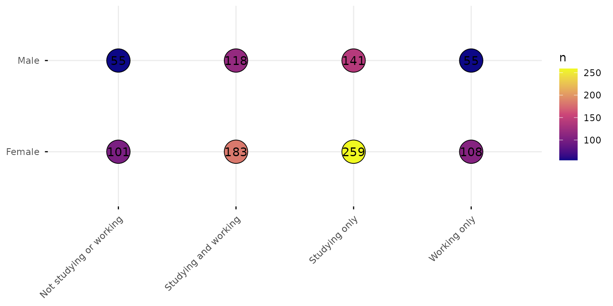